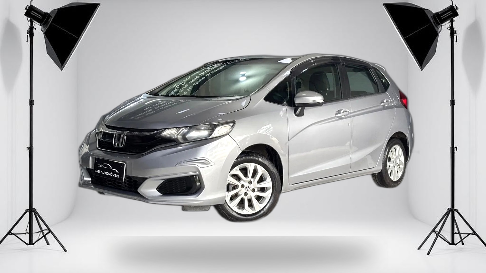
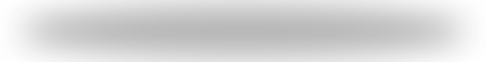
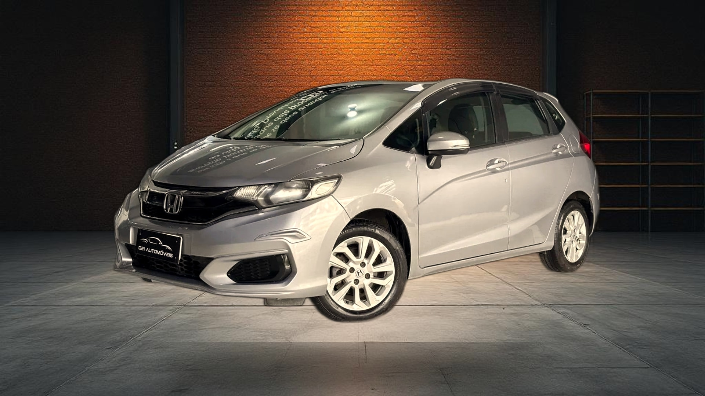
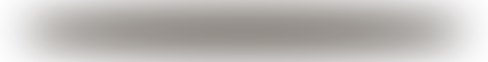
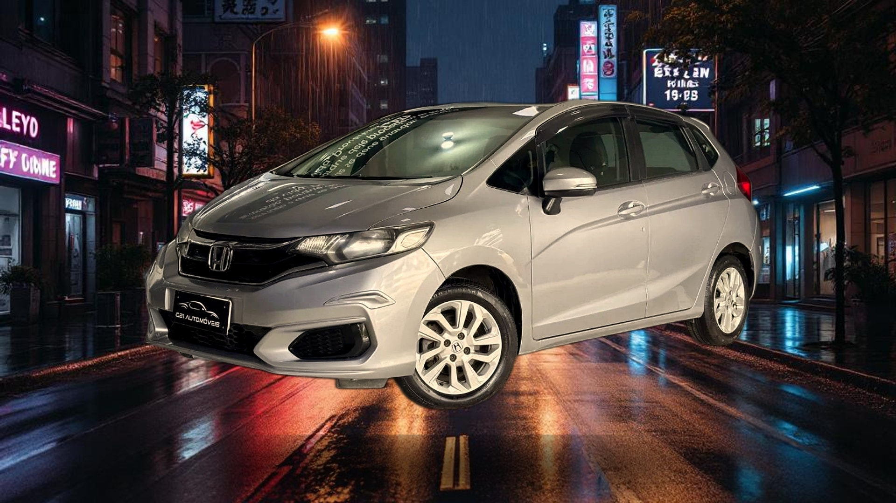
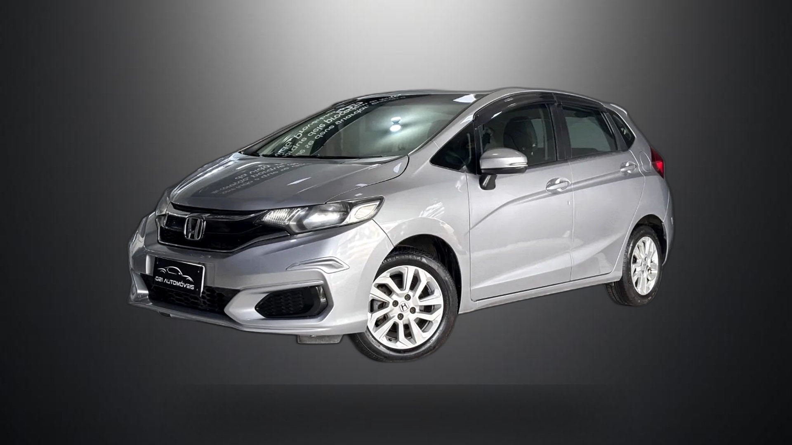

Honda Fit · 2026-04-21 · Cada cenário tem cor, opacidade, blur e blend mode calibrados individualmente


Sombra isolada ↑ · Topo: 56px cortado

Sombra isolada ↑ · Topo: 56px cortado

| Cenário | Cor | Opacidade | Blur | Blend | Motivo |
|---|---|---|---|---|---|
| Showroom Escuro | #000000 | 0.65 | 50px | multiply | Fundo escuro: multiply escurece naturalmente |
| Estúdio Branco | #333333 | 0.35 | 40px | over | Fundo branco: cinza escuro com over cria sombra visível |
| Garagem Premium | #1a0f00 | 0.55 | 50px | multiply | Tom warm: sombra com tint âmbar |
| Urbano Noturno | #000000 | 0.70 | 45px | multiply | Asfalto molhado: sombra forte |
| Neutro Gradiente | #000000 | 0.45 | 55px | over | Gradiente escuro: over deposita sombra sobre qualquer luminosidade |
| Showroom Escuro | Sombra visível no piso polido? | ___ |
| Estúdio Branco | Sombra cinza visível no branco? Carro não flutua? | ___ |
| Garagem Premium | Sombra warm no concreto? | ___ |
| Urbano Noturno | Sombra forte no asfalto? | ___ |
| Neutro Gradiente | Sombra visível no gradiente? Carro ancorado? | ___ |
yRatio=0.92 com veículo de 1050px causa corte de 56px no topo. Será ajustado na Prioridade 2 (reduzir escala ou yRatio).